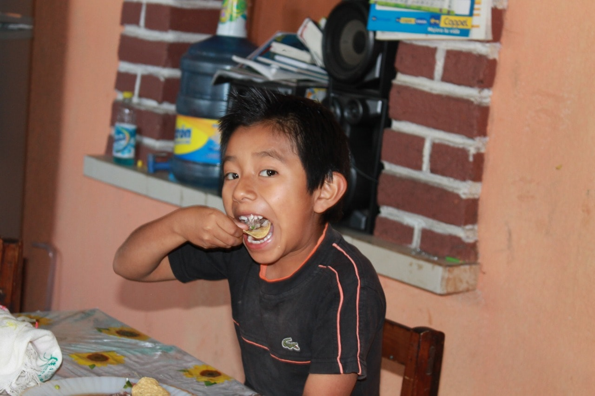
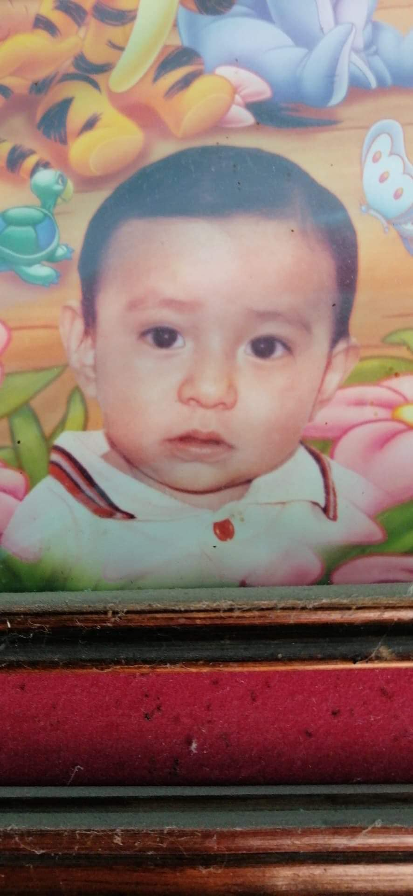

Mi primer post
Este es el contenido de mi primer post en mi blog personal. Aquí podré compartir mis experiencias, conocimientos y reflexiones.
Este es el contenido de mi primer post en mi blog personal. Aquí podré compartir mis experiencias, conocimientos y reflexiones.
En este post, te comparto algunas caracteristicas de mi y cosas que me representan a mi
Volver al InicioEstudie en el cbtis 92, estudie programacion y si soy tecnico en programacion tengo un titulo en programacion, no se mucho pero le entiendo muy bien y si no le entiendo busco como hacerlo
me gustan mucho estudiar en la universidad, aunque no tengo amigos soy feliz, soy muy sonriente y como mucho,
este soy yo de chiquito, tenia los dientes chuecos y utilice 3 años brackets para que se pudieran arreglar, todos me conocen como chris, Chirtian, cristino, kike, enrique y me gustan todos y por cierto soy de sancristobal de las casas, tengo dos hermanos y una hermana. una mamá hermosa

ellos son mis amigos de toda la vida y soy muy feliz cuando estoy con ellos, siempre nos vemos, siempre salimos y estamos juntos todos, yo soy de la iglesia nueva jerusalen, asi que soy adventista del septimo dia, yo estoy en el club de guias mayores
siempre e sido de gustos muy variados, pero siempre voy a escoger los depoder como un pasatiempo o mi pasatiempo favorito, amo todos los deportes tanto com el basquetbol, futbol, volleyball, americano, tocho bandera, etc.
desde chiquito mis sueño era jugar futbol profesionalmente, pero por una u otra situacion nunca se pudo lograr
amo viajar, me gustaria conocer la mayoria de los lugares en todo el mundo, tambien me gusta el mar, me gusta la playa, amo escuchar musica, me gusta demasiado dormir me gusta estar con mi noviecita
InicioGracias por su atencion :D